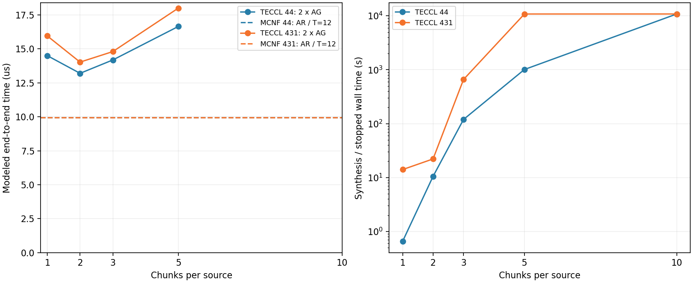

WH1234，4+4 / 4+3+1，各 1/2/3/5/10 块。每项 Gurobi TimeLimit=10800 s，四线程、Seed42；外层墙钟 11400 s，RSS 16 GiB，串行队列。每卡完整向量 250000 bytes，AG 每来源 1/8，每来源 c 块，每块 250000/(8c) bytes；每有向链路 400 Gbps，每实际活跃 epoch 0.1 us。AR 按完整 AG 时间二倍估算。旧六卡 60 秒实验不覆盖。
队列 COMPLETED，已完成 14/14。

| Case | 状态 | 已验收 | AG(us) | AR=2AG(us) | MCNF(us) | 优化(s) | 合成/中止(s) |
|---|---|---|---|---|---|---|---|
| 44_mcnf_allgather | optimal | True | — | — | 5.575 | 0.161381 | 0.619356 |
| 44_mcnf_allreduce | optimal | True | — | — | 9.95 | 0.358159 | 0.949495 |
| 431_mcnf_allgather | optimal | True | — | — | 6.40833 | 0.152516 | 0.556393 |
| 431_mcnf_allreduce | optimal | True | — | — | 9.95 | 0.603612 | 1.27863 |
| 44_c1 | OPTIMAL | True | 7.25 | 14.5 | — | 0.444985 | 0.655578 |
| 431_c1 | OPTIMAL | True | 7.975 | 15.95 | — | 13.7706 | 14.0555 |
| 44_c2 | OPTIMAL | True | 6.6 | 13.2 | — | 9.80724 | 10.5199 |
| 431_c2 | OPTIMAL | True | 7.0125 | 14.025 | — | 21.3648 | 22.1419 |
| 44_c3 | OPTIMAL | True | 7.09167 | 14.1833 | — | 118.18 | 119.522 |
| 431_c3 | OPTIMAL | True | 7.4 | 14.8 | — | 657.73 | 659.279 |
| 44_c5 | OPTIMAL | True | 8.325 | 16.65 | — | 1006.89 | 1010.01 |
| 431_c5 | TIME_LIMIT | True | 9 | 18 | — | 10800.1 | 10803.7 |
| 44_c10 | TIME_LIMIT | False | — | — | — | 10800.1 | 10810.6 |
| 431_c10 | TIME_LIMIT | False | — | — | — | 10801 | 10816.8 |
TECCL 以固定块和逐物理跳 epoch 建模，MCNF 使用连续分片、可变步长的逻辑 GPU 路由。MCNF 为 HWC / T=12 / main-only，AG 沿用公开 broadcast 支持的 HWC 模式（去掉 ahc_2level），直接 AR 使用完整 HWC；启动费是保存调度的事后评估，未重新优化。TIME_LIMIT 与无 incumbent 保留为原状态；未验收行没有通信时间。没有硬件实测，WH1234 Gurobi 12.0.3 的计算耗时不与旧 Mac Gurobi 13.0.0 直接混为同机测速。